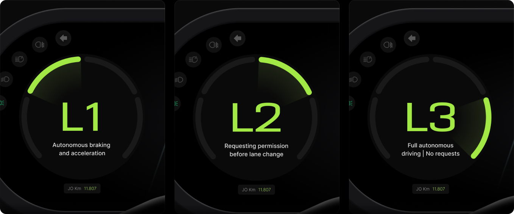
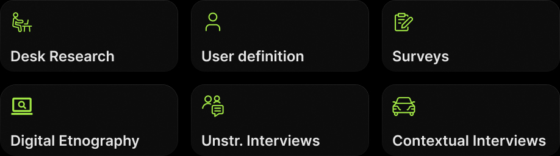
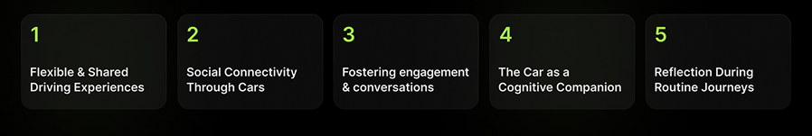
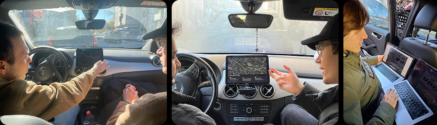
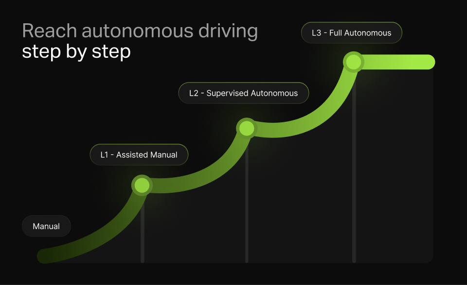
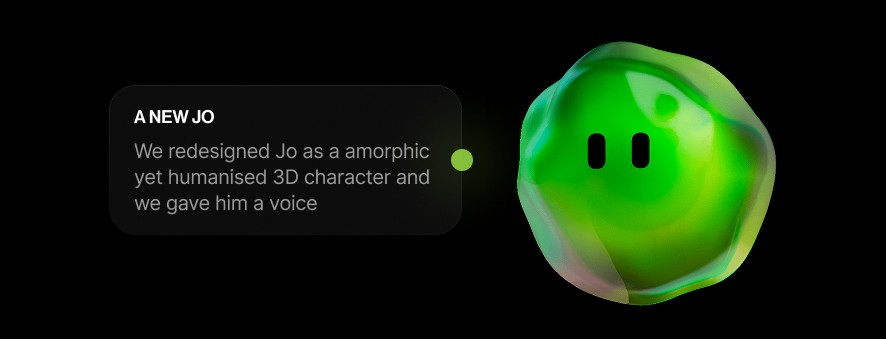

core features
Reads the Room (or the Driver!)
By continuously monitoring the driver's emotional state, the system detects low arousal levels and proactively suggests increasing autonomy when the user is more relaxed, ensuring a smoother transition.

Back to top
Jo is an interactive in-car system that gradually transitions drivers from manual control to full autonomy through three progressive steps. By providing empathetic guidance, Jo builds user confidence and fosters trust in autonomous driving.
Jacopo Bartoli, Simone de Marchi, Paolo Lunardon, Martina Ricca
UX researcher, Interaction designer, UI developer
The system gradually transitions drivers from manual control to full autonomy in three progressive steps, allowing them to adjust at their own pace and build confidence in autonomous driving.
By continuously monitoring the driver's emotional state, the system detects low arousal levels and proactively suggests increasing autonomy when the user is more relaxed, ensuring a smoother transition.
"Jo," the system's digital assistant, provides intuitive guidance through voice instructions and steering wheel controls, helping users feel supported and in control throughout their journey toward full autonomy.

We began by analyzing ItalDesign's brief, captivated by future automotive scenarios. After brainstorming various problems, we delved deeper, using different methods to identify user patterns and behaviors.
The research helped us to identify seven new meanings across two car usage scenarios. We then narrowed them to five, allowing each team member to explore one individually, fostering diverse insights and potential innovations.
We further developed and pitched each concept to the professors and professionals of the car ux industry. Based on the insight received we finally chose one concept and defined our first UVP:
Testing was crucial for us. We realized we had lost sight of our user research, focusing too much on future scenarios and technology instead of the real problems we identified earlier.
To address this, we reframed our system using insights from our first user testing, leading us to our current UVP, revolving around the concept of trustability in autonomous driving.

Defining and sketching the system has been a good starting point to understand what should we have tested and what should not.
With our first mid-fidelity UI we underwent a very intense day of testing with other students, professors and professionals. Their insights helped us to improve usability and to polish our design.
In the final phase, we refined the system and UI, streamlining Jo's communication of levels both visually and verbally. We integrated ADAS into the cockpit, and minimized text by enhancing Jo's voice interaction.

After gathering insights, we made key improvements: the level display and ADAS are now in the cockpit, a reject option was added via the left handle, the central infotainment screen was removed, the timer in notifications eliminated, and text reduced with voice integration for a better user experience.
After gathering insights, we made key improvements: the level display and ADAS are now in the cockpit, a reject option was added via the left handle, the central infotainment screen was removed, the timer in notifications eliminated, and text reduced with voice integration for a better user experience.

After gathering insights, we made key improvements: the level display and ADAS are now in the cockpit, a reject option was added via the left handle, the central infotainment screen was removed, the timer in notifications eliminated, and text reduced with voice integration for a better user experience.